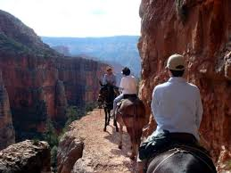

ADVENTURES
Spot Gorillas in Uganda

It’s very possible to get a smidge of primatologist Jane Goodall’s experience without making gorillas your life’s work. On Abercrombie & Kent’s 5-day Tailor- Made Uganda: Bwindi Impenetrable Forest journey, you’ll pick your adventure pleasure, whether you want to penetrate the lush-beyond-belief Bwindi “Impenetrable” Forest National Park in search of its resident tribes of gorillas, or tour the children’s wing at the local community hospital with A&K Philanthropy. When you see your first gorilla, remember it’s not King Kong: gorillas are typically sweet-tempered, even a bit bashful.
Book now!National Geographic Guided Tour of Antartica

Experience Antarctica from every perspective using a range of exploration tools aboard the National Geographic Explorer, National Geographic Endurance, or National Geographic Resolution, including a remotely operated vehicle that captures footage of the ocean floor. Explore alongside a team of biologists, geologists, and undersea specialists who offer insights and engaging presentations throughout the trip. Get up close to icebergs, wildlife, and hard-to- reach places using our fleets of kayaks and Zodiacs. Observe a range of penguin and whale species, as well as seals and seabirds, and photograph them alongside our onboard photo instructor and National Geographic photographer.
Book Now!Guided Donkey Tour of the Grand Canyon
In this tour we will descend down the wall of the canyon to the bottom. Along the way experienced guides will point out stunning landmarks in this beautiful natural park. Guides will also help you get to know the donkey you will be descending on. Once at the bottom of the canyon we will leave out donkeys behind and raft down the river. along the way guides will point out natural features that will take your breath away. Experience a tour like no other.
Book Now!